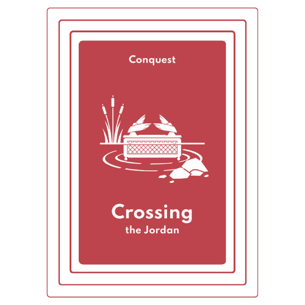
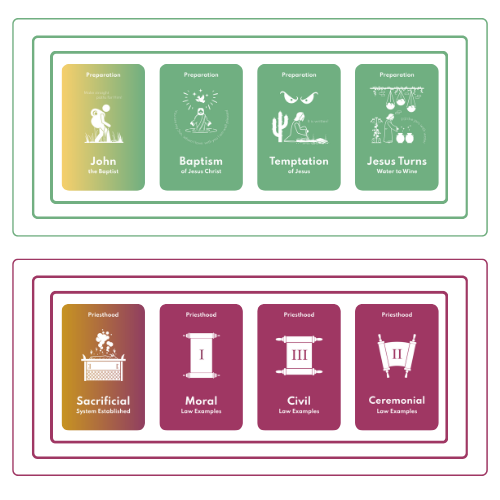

Start with a Game
One of the biggest barriers to discipleship knowing where to start, with Anchor it's simple! You don't need to know everything, we have done a lot of the hard theology for you.
- Step 1: Pray and ask God to reveal who He has placed in your life already that you can help spiritually form. Often God works through the existing friendships and relationship we have.
- Step 2: Organize an easy place to meet up one-on-one. Play a game of Anchor over coffee, tea or hot chocolate, and have some fun! Anchor has been made to be fun whether you know a lot or little about the Bible.
- Step 3: As you play together, questions and moments of curiosity will surface on their own. Share what you know. Speak into what you notice. And when you don't know the answer, say so. Let it naturally drift into discipleship and when you are ready try one of the following:

- Pick any card from the Anchor deck that catches their interest. Curiosity and guided discovery are powerful tools for learning. Work together to figure out where the card fits in the biblical timeline, then read part of it (or the whole card if it's shorter). Let the conversation naturally flow into real-life application. Afterwards, encourage them to continue exploring the deck until you meet again.

- Choose a Theme Set you know well from the Anchor deck and walk through it together. Show how each card connects to the next, how the theme fits into the bigger story of Scripture, and share some of the lessons you have learned from it. Then encourage them to continue exploring the remaining cards on their own before you meet again, so they can share their insights and discoveries with you.